WHITE MAGIC ART STUDIO
第十九章
火焰之下
桃園・昱鎧就讀的國小
同一時間。
舊倉庫裡，濃煙已經遮住了大半視線。
昱鎧蹲在牆邊，用袖口緊緊摀住口鼻。
空氣越來越燙。
他試著吸氣，卻立刻被煙嗆得咳嗽起來。
「咳、咳咳……」
眼淚模糊了視線。
他想站起來，雙腿卻有些發軟。
明明剛才還能看見門口，現在卻只剩一片灰黑。
「有人嗎……」
他努力喊了一聲。
「救命……」
沒有人回答。
只有木材燃燒時，不時傳來的細碎聲響。
就在這時。
煙霧深處，傳來腳步聲。
一步。
又一步。
昱鎧猛地抬頭。
一道高大的身影，正緩緩穿過濃煙。
那人穿著一件深色風衣，衣角被火光映得忽明忽暗。
周圍的火焰沒有阻止他的腳步。
反而隨著他的靠近，逐漸向兩側退開。
昱鎧睜大眼睛。
那雙枯葉般的褐黃色虹膜，在煙霧裡泛著微弱的光。
男人停在他面前。
低頭看著他。
「……你是惡魔嗎？」
昱鎧的聲音發顫。
男人似乎覺得有趣。
「惡魔？」
他輕輕笑了一聲。
「那些東西，還不配跟我相提並論。」
昱鎧往後縮了一點。
他看不清對方的臉。
但那股壓迫感，讓他幾乎喘不過氣。
他下意識啟動木瞳術。
原本深褐色的虹膜，逐漸泛起翠綠色微光。
讀心。
下一瞬間。
陌生的情緒猛地湧進腦海。
憤怒。
憎恨。
還有一種幾乎無法平息的痛苦。
昱鎧看見一些破碎的畫面。
燃燒的街道。
被火光映紅的建築。
混亂的人群。
以及一道獨自站在烈焰之中的身影。
畫面一閃而過。
昱鎧猛地閉上眼睛。
「唔……！」
他扶住額頭。
那些情緒太過強烈，幾乎讓他分不清哪些屬於自己。
但其中一個名字，卻異常清晰。
張國豪。
男人微微瞇起眼睛。
「哦？」
他看著昱鎧泛綠的虹膜。
「木瞳術啊。」
昱鎧抬起頭。
男人蹲下身，與他平視。
「你就是梁景皓的兒子？」
昱鎧沒有回答。
男人繼續說：
「也就是……那朵花的種子。」
昱鎧愣住。
「……什麼種子？」
男人沒有解釋。
只是看著他，像是在確認什麼。
昱鎧往後退了一步。
「你不要過來。」
男人沒有動。
「我爸爸……」
昱鎧努力讓自己的聲音聽起來堅定一些。
「我爸爸不會放過你的。」
男人的嘴角微微揚起。
「你爸爸？」
他抬頭看了一眼四周。
「可惜，他現在不在這裡。」
昱鎧咬緊嘴唇。
男人站起身。
火光沿著他的指尖緩緩浮現。
「放心。」
他朝昱鎧伸出手。
「我不是來殺你的。」
「……」
「我是來帶你走的。」
昱鎧背抵著牆壁。
已經無路可退。
就在男人的手即將碰到他時——
「昱鎧！退開！」
一道熟悉的聲音，突然從火光後方傳來。
昱鎧猛地轉頭。
「……老師？」
一道黑金色的圓盤，驟然穿過煙霧！
呼——！
盤刃高速旋轉，沿途帶起一道炙熱的氣流。
男人迅速側身。
圓盤擦過他的手臂，撞上後方牆面。
砰！
火星四散。
下一秒，圓盤突然改變方向，沿著原本的軌跡折返。
男人抬手擋下。
金屬與火焰相撞，發出刺耳的聲響。
一道身影趁勢衝進倉庫。
王詩涵。
她一把拉起昱鎧，將他護在身後。
「老師……」
「別說話。」
詩涵緊盯著眼前的男人。
「待在我後面。」
她伸出右手。
黑金色盤刃在半空中旋轉一圈，穩穩回到掌中。
盤面邊緣的金色火焰紋路，泛起細緻的光芒。
男人看著她手中的術器。
「火之術器使？」
他的目光移到詩涵臉上。
停頓了一瞬。
「……原來是妳。」
詩涵皺起眉頭。
她不記得自己見過這個人。
但對方的聖術氣息，讓她感到極不舒服。
那不是一般惡魔會有的力量。
「你到底是誰？」
男人沒有回答。
反而慢慢放下手。
「我不想浪費時間。」
他看向詩涵身後的昱鎧。
「把孩子交給我。」
詩涵握緊盤刃。
「你想得美。」
話音未落。
她率先出手。
盤刃從掌心飛出，沿著男人右側高速掠過。
男人側身避開。
然而圓盤並未繼續飛遠。
它在半空中突然折返，從另一個角度逼近！
男人抬起手。
一道火牆瞬間升起。
轟！
盤刃撞進火牆。
詩涵立刻變換手勢。
圓盤沿著火牆邊緣旋轉，繞開正面衝擊，再次朝男人飛去。
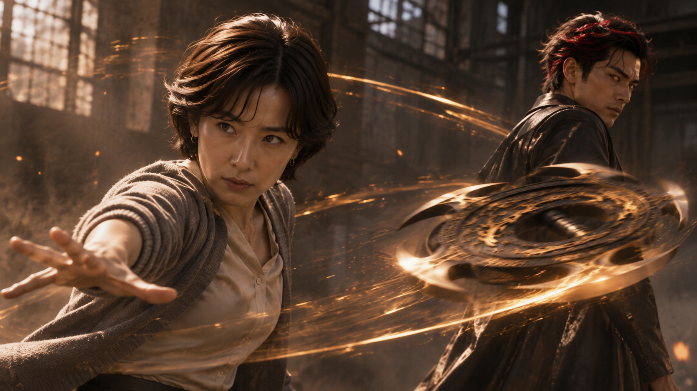
男人的眼神微微一變。
「……有點本事。」
詩涵沒有回應。
她知道自己不能跟對方硬碰硬。
從剛才開始，她就能感覺到，對方體內的熱能遠超一般火之聖術師。
而且還在不斷增強。
她只能利用術器的速度與變化，盡可能限制對方的行動。
「昱鎧！」
她趁著盤刃牽制對方的空檔，大聲喊道：
「往門口跑！」
昱鎧回頭看了一眼。
火焰已經蔓延到門邊。
「可是老師——」
「快！」
詩涵再次甩動手臂。
盤刃飛回她身前。
金色紋路亮起。
圓盤中央的結構迅速展開，化為一道弧形盾面。
下一秒。
男人抬起手。
一團凝聚的烈火，猛地朝兩人襲來！
轟——！
詩涵雙腳穩穩踏住地面。
盾面正面迎上火焰。
強烈的衝擊讓她向後滑了半步。
她咬緊牙關。
沒有退開。
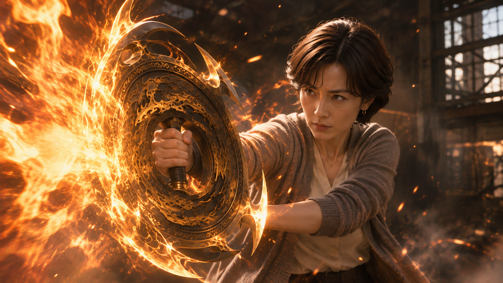
「昱鎧！」
男孩終於轉身，朝門口跑去。
然而，他才跑出幾步。
另一道火牆便突然從地面升起，封住出口。
昱鎧猛地停住。
「啊！」
詩涵心頭一沉。
她回頭看向男人。
對方仍站在原地。
甚至沒有追上來的意思。
「妳很努力。」
男人淡淡地說。
「但這樣就想帶走他？」
詩涵沒有回答。
她迅速收回盾面，讓盤刃重新合攏。
既然無法突破火牆——
就只能先讓這個人離開昱鎧。
她踏步向前。
盤刃沿著手臂旋轉，猛地甩出。
男人抬手迎擊。
兩股火之聖術再次碰撞。
但這一次。
詩涵突然感覺到不對。
對方並不是在抵擋她的攻擊。
而是在等待她靠近。
「糟——」
男人的手掌猛地向下一壓。
一道火浪沿著地面向外擴散。
詩涵立刻召回盤刃，展開盾面。
轟！
衝擊迎面而來。
她勉強擋住第一波。
然而，緊接著又是一道。
盾面上的金色紋路開始劇烈閃爍。
詩涵咬緊牙關。
就在她試圖調整重心時——
第三道衝擊已經抵達。
砰！
盾面被震開。
詩涵整個人向後飛出，撞上倉庫側牆。
「老師！」
昱鎧驚叫。
詩涵落在地上。
她試著撐起身體，卻沒有成功。
黑金色盤刃滑落在不遠處。
金色紋路逐漸暗了下來。
她抬起頭。
模糊的視線裡，仍然看得見昱鎧。
「……快跑。」
她努力吐出兩個字。
「老師……」
昱鎧站在原地。
他想跑過去。
卻看見那個男人，再次朝自己走來。
「真麻煩。」
男人看了一眼倒地的詩涵。
「明明可以不用受這些苦。」
他走到昱鎧面前。
伸出手。
「來吧，種子。」
昱鎧緊緊靠著牆。
男人低下頭。
「你該知道，自己為什麼會存在。」
昱鎧的眼睛慢慢睜大。
「……什麼？」
男人沒有回答。
就在他的手即將碰到昱鎧時——
一道破風聲，突然從側面傳來。
男人猛地轉頭。
但已經來不及了。
砰——！
一記帶著翠綠色光芒的拳頭，狠狠擊中他的胸口！
強烈的衝擊將男人震退。
他的身影穿過煙霧，撞向後方堆放的木箱。
轟！
木箱接連倒塌。
昱鎧愣住。
煙霧裡，一道熟悉的身影落在他面前。
黑色素衣。
蓬鬆的短髮。
還有那雙泛著翠綠色光芒的眼睛。
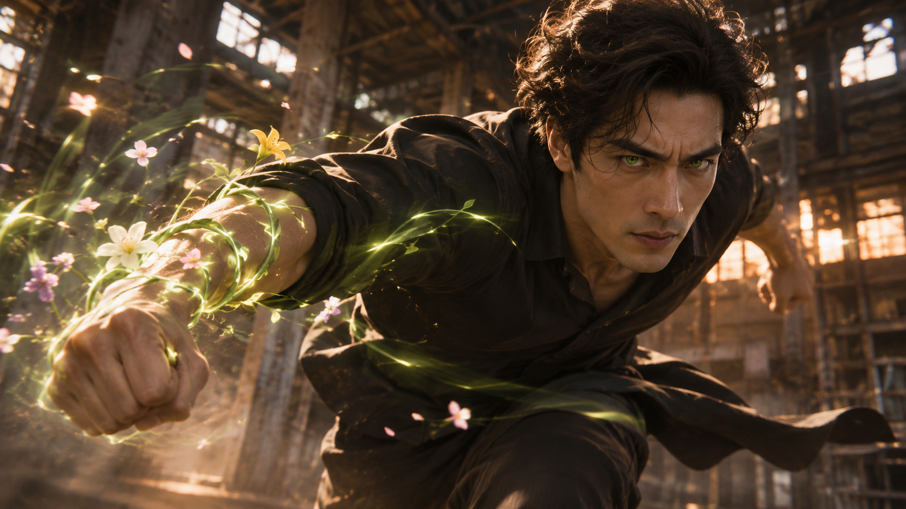
「……爸爸？」
景皓沒有回頭。
他盯著煙霧深處。
聲音低得幾乎聽不出情緒。
「不准碰我兒子。」
昱鎧的眼眶瞬間紅了。
「爸爸！」
景皓終於轉身。
他一把將兒子抱進懷裡。
「昱鎧！」
他迅速查看孩子的臉色與呼吸。
「有沒有受傷？」
昱鎧搖頭。
卻忍不住咳了幾聲。
景皓的表情更沉了。
「沒事了。」
他輕輕按住兒子的後腦。
「爸爸來了。」
昱鎧緊緊抓住他的衣服。
景皓閉了閉眼。
只是一瞬間。
他便重新抬起頭。
因為煙霧深處，已經再次傳來腳步聲。
「……梁景皓。」
男人從倒塌的木箱旁走出。
他拍了拍風衣上的灰塵。
抬頭看著景皓。
「來得真快。」
景皓將昱鎧護在身後。
「你到底想對我兒子做什麼？」
男人沒有回答。
只是微微偏頭。
「沒什麼，只是因為你不『借』我，我就自己來拿嘍。」
景皓的眼神一沉。
「果然你的目標是...」
男人笑了。
「放心吧，都說是『借了』，就一定會還你。」
就在這時。
另一道聲音從後方傳來。
「離他們遠一點！」
景毅穿過濃煙，快步來到兩人身旁。
他手中握著黑金色葉形長槍。
看見昱鎧平安站在哥哥身後，他明顯鬆了一口氣。
「叔叔……」
昱鎧小聲喊道。
景毅還來不及回答。
炎君已經看向他。
「哦？」
他挑起眉頭。
「你還沒死啊。」
景毅冷冷瞥了他一眼。
「讓你失望了。」
炎君輕笑一聲。
下一秒。
一道火焰突然從他掌心湧出！
景毅反應極快。
長槍往地面一落。
黑色木質結構沿著地面迅速蔓延。
玄武木。
堅硬的木質屏障拔地而起。
交錯的紋路如龜甲般緊密相扣。
轟——！
火焰正面撞上盾牆。
猛烈的氣流向兩側擴散。
但玄武木沒有退讓。
景毅握緊長槍。
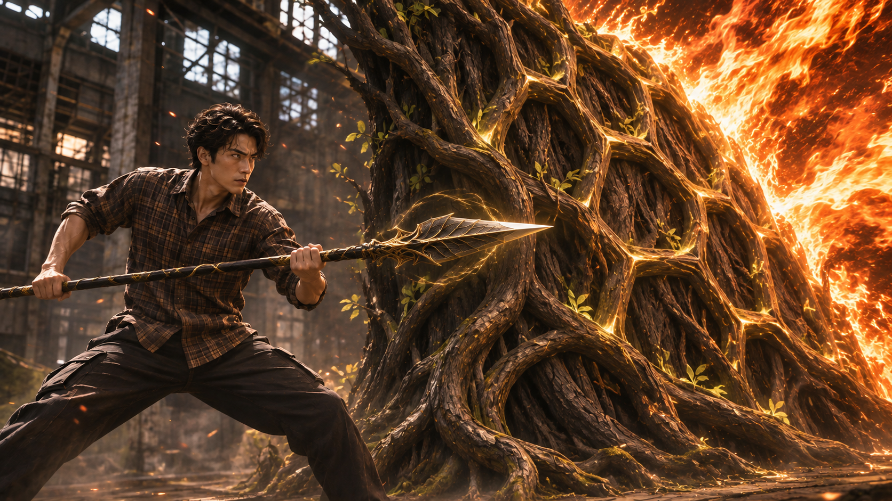
「哥！」
「我知道！」
景皓立刻將昱鎧帶到屏障後方。
昱鎧抬頭看著那道黑色木牆。
忽然想起叔叔之前說過的話。
「……叔叔。」
景毅沒有回頭。
「還記得我說過什麼嗎？」
昱鎧愣了一下。
景毅的聲音從火焰的轟鳴中傳來。
「我的玄武木，堅硬如岩……」
昱鎧望著那道穩穩擋住烈火的木牆。
原本緊繃的神情，終於稍稍放鬆。
「……連火焰都可以擋下！」
景毅嘴角微微一揚。
「答對了。」
他握緊長槍。
「所以，別怕。」
景皓看了弟弟一眼。
景毅沒有轉頭。
只是說：
「哥，先去看那個女人。」
景皓這才注意到，倉庫另一側倒著一道熟悉的身影。
「……詩涵？」
他立刻衝了過去。
蹲下身，用木瞳迅速檢查她的呼吸與脈搏。
「王老師！」
沒有回應。
景皓皺緊眉頭。
「……還有呼吸。」
他抬頭看向景毅。
「她還活著！」
「那就快帶她出去！」
景毅向前踏出一步。
玄武木沿著地面分出數道粗壯枝幹，朝炎君所在的位置延伸。
炎君抬手。
火焰迅速升起。
黑色木枝撞進火牆，將他的視線暫時隔開。
景毅趁勢退回哥哥身旁。
「昱鎧，過來。」
昱鎧連忙跑到叔叔身邊。
景毅蹲下身。
「我先帶你出去！」
昱鎧看了一眼景皓。
景皓正小心扶起詩涵。
「聽叔叔的。」
昱鎧點點頭。
景毅伸手將他抱起。
「抓緊。」
另一邊，景皓已經將詩涵穩穩抱在懷裡。
他看向被火焰封住的出口。
「正門走不了。」
景毅皺起眉頭。
「那怎麼辦？」
景皓低頭看向自己的口袋。
裡頭還有幾顆隨身攜帶的花種。
他騰出一隻手，將種子撒向地面。
翠綠色的聖術迅速蔓延。
幾株植物從地板縫隙間生長，短短幾秒便開出花朵。
景皓伸手。
花朵的精華化為細小光點，迅速融入他的掌心。
他抬起頭。
看向側面的牆壁。
「景毅。」
「嗯？」
「幫我擋一下。」
景毅立刻明白。
「好。」
玄武木再度升起。
這一次，黑色木牆不只阻擋炎君，也將景皓與兩個孩子所在的位置完整遮蔽。
景皓深吸一口氣。
左手的皮膚下，浮現細緻的翠綠色紋路。
他握緊拳頭。
猛地擊向側牆！
砰——！
牆面震動。
一道裂縫迅速向四周擴散。
緊接著，部分牆體向外崩落。
陽光從缺口灑進倉庫。
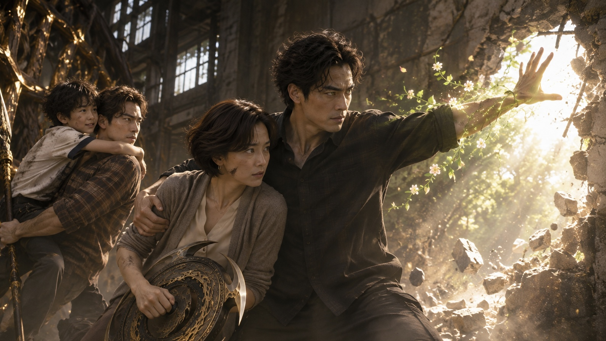
景毅立刻抱著昱鎧退向出口。
「哥！」
景皓抱穩詩涵。
「走！」
兩人一前一後，衝出倉庫。
景皓踏上迅速生長的木枝，借力躍過外側的矮牆。
景毅則操控玄武木向前延伸，帶著昱鎧緊跟在後。
倉庫裡。
炎君看著兩人離去的方向。
眼神逐漸沉了下來。
「……想跑？」
他抬起手。
火焰開始在掌心聚集。
然而，就在他準備追上去時——
一陣霧氣，忽然從腳邊漫了過來。
炎君停住。
他低頭看了一眼。
「……嗯？」
那不是煙。
空氣中的熱度，正在迅速下降。
下一瞬間。
大片濃霧沿著校園地面擴散。
操場。
走廊。
以及通往校門的道路。
轉眼間，全都被白霧覆蓋。
炎君瞇起眼睛。
「水之聖術？」
霧中，忽然傳來細微的水聲。
像是有人將筆尖輕輕點在水面上。
一道漣漪，從半空中擴散開來。
炎君抬頭。
只見幾滴水珠懸浮在空中。
它們緩緩移動。
一筆。
又一筆。
竟在霧氣裡勾勒出一隻蝴蝶的輪廓。
炎君微微皺眉。
下一秒。
蝴蝶振翅。
透明的翅膀瞬間凝結成冰。
數道細小冰晶，猛地朝炎君飛去！
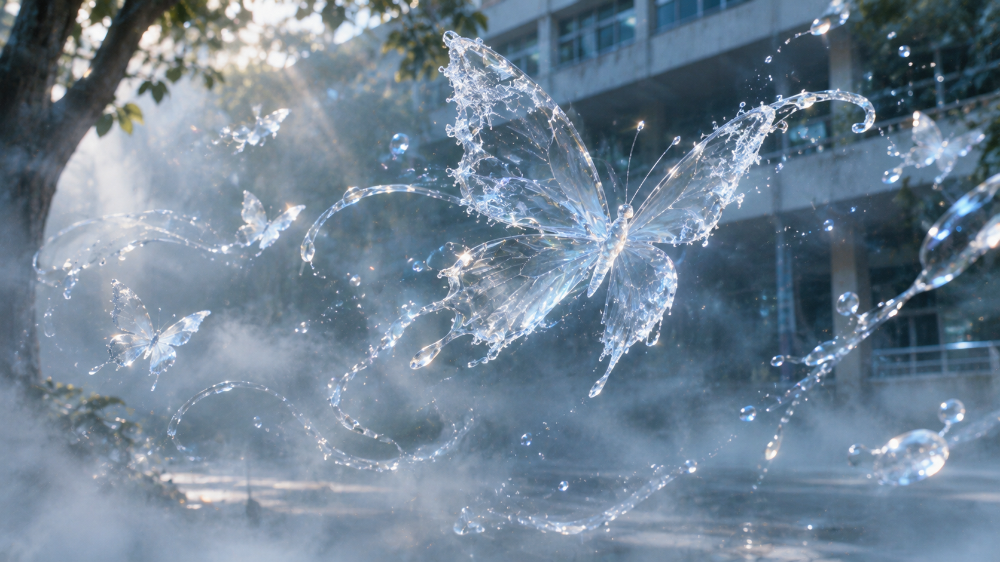
炎君抬手。
火焰迎面湧出。
冰晶在半空中碎裂。
細碎的水霧四散開來。
而就在霧氣後方。
一道纖細的身影，緩緩走出。
女子有著深邃立體的五官。
長而微捲的頭髮，在腦後束成低馬尾。
幾縷髮絲垂落肩側。
她披著一件銀灰色短斗篷。
灰藍色的眼睛，安靜地望著炎君。
右手握著一支黑金色的長筆。
筆尖垂落。
腳邊的水氣，隨之泛起細微漣漪。
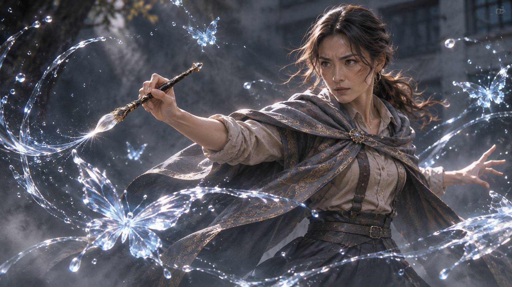
炎君看著她。
「……術器使？」
女子沒有回答。
她只是抬起手中的筆。
在空中輕輕一劃。
一道水痕憑空出現。
隨著筆尖移動，水痕迅速延伸，化為一道半透明的冰晶屏障。
炎君抬手。
火焰猛地撞上屏障。
大量水氣瞬間升起。
但女子沒有退開。
她只是再次落筆。
更多水珠在霧中聚集。
一隻。
兩隻。
數隻由水構成的蝴蝶，接連展開翅膀。
炎君的眼神微微一沉。
這些水並不是單純的幻象。
而是能隨著她的筆觸，改變形態的真正聖術。
女子抬起眼。
看向遠處正在撤離的景皓一行人。
她抬起空著的左手。
簡短地比出一個手勢。
走。
景皓愣了一下。
隨即認出了她。
「……瑞恩？」
女子微微點頭。
接著重新望向炎君。
手中的黑金色長筆，再次落下。
水之術器使——宋瑞恩。
城市之光教會的聖術師。
也是教會裡，最令人信賴的戰力之一。
她不需要說話。
筆尖所到之處，水便有了形狀。
而那些形狀，都足以成為阻擋敵人的力量。
校園後方
景皓抱著詩涵，景毅抱著昱鎧。
兩人穿過濃霧，沿著校園後方的小路疾行。
「哥！」
景毅回頭看了一眼。
「剛才那個人是？」
「我認識的聖術師！」
景皓簡短回答。
「先離開這裡！」
就在這時。
霧中忽然傳來一段急促的小提琴聲。
景毅一愣。
「……什麼聲音？」
下一秒。
一陣強風沿著道路猛地吹來！
周圍的煙霧迅速向兩側散開。
原本模糊的視線，頓時清晰不少。
「景皓！」
一道熟悉的聲音從前方傳來。
「這邊！」
景皓抬頭。
不遠處，一輛深灰色休旅車停在校園後方的道路旁。
車邊站著一名男子。
他肩上架著一把黑金色小提琴。
右手持著琴弓。
隨著琴弓快速移動，周圍的氣流也跟著改變方向。
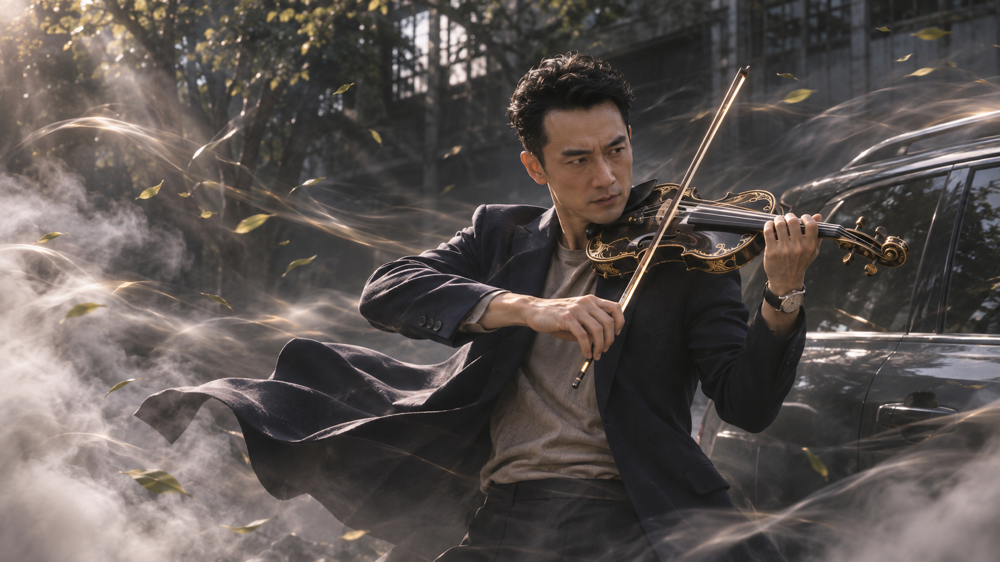
「陳傳道！」
景皓喊道。
陳建霖抬頭看了他一眼。
「沒時間了！」
他拉開後座車門。
「快上車！」
景毅抱著昱鎧率先抵達。
他將孩子安置在後座。
景皓緊接著趕到，小心地把詩涵放進車內。
「小心他的傷！」
「我看到了！」
建霖額頭已經冒出細汗。
「快點，我撐不了太久！」
景毅回頭望向濃霧。
「那個女的呢？」
「瑞恩會跟上來！」
建霖回答。
「先上車！」
景毅沒有再問。
他立刻坐進後座，將昱鎧護在身旁。
景皓則坐在詩涵另一側，繼續留意她的呼吸。
建霖收起小提琴。
琴身化為細碎光點，消失在空氣中。
他迅速坐進駕駛座。
發動引擎。
「瑞恩！」
他朝霧中喊了一聲。
話音未落。
一道身影便從車旁的白霧中走出。
宋瑞恩快步來到副駕駛座。
拉開車門。
坐了進去。
她的斗篷上，還沾著細小水珠。
建霖看向她。
「沒事吧？」
瑞恩搖頭。
隨即抬起手，比出一個簡短的手勢。
可以走了。
建霖點頭。
「好！」
車門關上。
休旅車迅速駛離校園後方。
瑞恩望向車窗外。
她抬起手中的黑金色長筆，輕輕一揮。
一道水霧沿著道路迅速擴散，將車輛離去的方向遮蔽。
直到休旅車消失在遠處。
她才將術器收起。
校園・舊倉庫外
霧氣逐漸散去。
炎君站在倉庫前。
望著遠處空無一人的道路。
他沉默了片刻。
隨即冷冷哼了一聲。
「……跑得倒快。」
「哎呀。」
一道懶洋洋的聲音，忽然從身後傳來。
「看來是失敗了呢。」
炎君沒有回頭。
「……」
腳步聲慢慢靠近。
一名身穿米白色西裝的男子，從霧氣裡走出。
頭髮整齊地向後梳起。
臉上掛著一抹輕浮的笑容。
曾永華。
他雙手插在口袋裡，環顧四周。
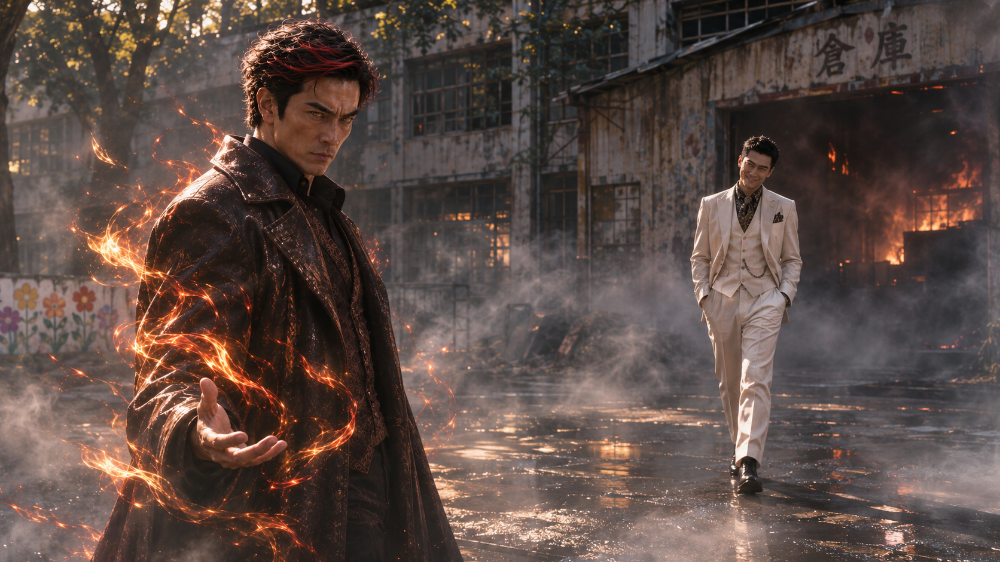
「真不得了。」
「一個小孩子，竟然能引來這麼多人。」
炎君冷冷瞥了他一眼。
「你倒是挺悠閒。」
「欸？」
永華故作驚訝。
「怎麼這樣說？」
「剛才你人在哪？」
「我不是已經幫你把孩子引過來了嗎？」
永華攤開雙手。
「剩下的事情，總不能也全部算我的吧？」
炎君沒有回答。
永華看了一眼倉庫。
又看向遠處尚未完全散去的霧氣。
「不過說真的。」
他收起一點笑意。
「那個水之術器使，還真有兩下子。」
炎君冷哼一聲。
「只是個礙事的傢伙。」
「是嗎？」
永華笑了笑。
「加上梁家兄弟，還有那個女老師、拉小提琴的術器使……」
他伸出手指，慢慢數著。
「五個聖術師耶。」
「……」
「你確定還要追？」
炎君的眼神一沉。
火焰再次沿著他的手臂浮現。
永華見狀，連忙抬手。
「等等、等等。」
「又怎樣？」
「先別急嘛。」
永華從西裝內袋裡，拿出一隻紙折的老鷹。
炎君看了一眼。
「……那是什麼？」
「有人送來的。」
永華捏著紙鷹的翅膀。
「而且我覺得，你應該會很有興趣。」
炎君皺起眉頭。
永華將紙鷹遞給他。
「小心一點啊。」
「別一把火把它燒了。」
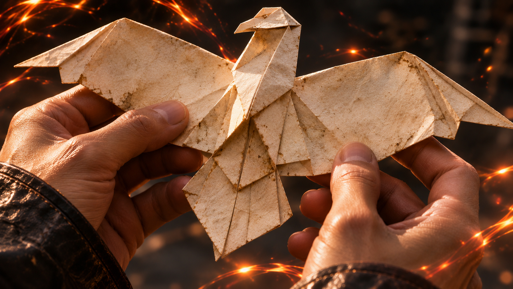
炎君接過紙鷹。
紙張微微顫動。
接著，竟自行展開。
幾道摺痕緩緩攤平。
紙面上，只留下短短一行字。
「你們在找的種子，確定找對了嗎？」
炎君的眼神瞬間變了。
他將紙張翻過來。
右下角，還寫著一組地址。
「……誰送來的？」
永華聳聳肩。
「不知道。」
「不知道？」
「真的啊。」
永華笑了笑。
「我剛剛在處理紅心餐酒館那邊的事情。」
「新聞、監視器，還有一些不太好收拾的麻煩。」
他停了一下。
「結果這隻紙老鷹，就自己飛到我面前了。」
炎君低頭看著紙張。
永華繼續說：
「而且不管我怎麼攤開，它過一會兒就會自己折回去。」
他偏了偏頭。
「你說奇不奇怪？」
炎君沒有回答。
他將紙張靠近鼻尖。
輕輕聞了一下。
下一秒。
他的表情微微一變。
「……檀香木。」
永華嘴角的笑意更深了。
炎君抬起頭。
「這是鄭老師的紙。」
「看來你也認出來了，這是鄭老師的力量。」
永華說。
炎君再次看向那行字。
「……他怎麼會突然聯絡我們？」
「誰知道呢。」
永華雙手一攤。
「說不定只是想找我們敘敘舊。」
炎君沒有理會他的玩笑。
「都過了這麼多年……」
他低聲說。
「難道他又打算替那位大人做事？」
永華看著他。
這一次，沒有立刻回答。
片刻後，他才重新露出笑容。
「既然人家都寄邀請函來了。」
「去看看，不就知道了？」
炎君盯著紙上的地址。
沒有說話。
永華忽然轉頭，看向身後的校舍。
「啊，對了。」
炎君皺眉。
「又怎樣？」
永華笑得有些漫不經心。
「阿豪。」
「……」
「既然沒把那孩子帶走，要不要乾脆把這裡也燒了？」
炎君緩緩轉頭。
看著他。
永華聳聳肩。
「開個玩笑嘛。」
炎君沒有回應。
他抬起手。
火焰沿著身體迅速升起。
下一瞬間。
整個人化為一道火光，消失在遠處。
永華站在原地。
看著他離去的方向。
過了一會兒。
他輕輕嘆了口氣。
「……還說你沒心軟。」
他低頭整理了一下西裝袖口。
接著轉身，走向尚未完全散去的霧氣。
隨著身影逐漸模糊。
他的臉部輪廓，也開始悄悄改變。
當他再次走出霧氣時。
已經換成了另一張陌生的面孔。
另一頭・建霖的車上
休旅車沿著市區道路快速前進。
車內一片安靜。
景毅回頭看了一眼後車窗。
確定沒有任何異常後，才稍稍放鬆肩膀。
「……看來沒追上來。」
景皓沒有回答。
他的注意力仍在昱鎧身上。
「還會喘嗎？」
昱鎧搖搖頭。
「好多了。」
景皓伸手摸了摸兒子的額頭。
「頭會不會暈？」
「一點點。」
「胸口呢？會不會痛？」
「爸爸……」
昱鎧有些無奈地看著他。
「我真的還好啦。」
景皓停了一下。
沒有再追問。
只是輕輕摸了摸他的頭。
「……好。」
昱鎧看向一旁的詩涵。
老師仍然閉著眼睛。
「可是老師她……」
景皓順著兒子的視線望過去。
他伸手再次確認詩涵的脈搏。
「她還有呼吸。」
他輕聲說。
「我們會想辦法救她。」
昱鎧點點頭。
卻仍然緊緊抓著父親的衣角。
前座。
建霖透過後照鏡看了一眼。
「大家都沒事吧。」
景皓抬起頭。
「陳傳道。」
「嗯？」
「謝謝你們。」
建霖笑了一聲。
「不是說過，叫我建霖就好嗎？」
景皓勉強笑了笑。
「……建霖。」
「這樣才對。」
建霖轉動方向盤。
景皓看向他。
「不過，你們怎麼知道學校這邊出事了？」
「詩涵通知我們的。」
景皓一愣。
「王老師？」
「嗯。」
建霖點頭。
「她幾個月前就加入城市之光了。」
「今天學校出現異常時，她打電話告訴我，說感覺到一股非常強烈的邪氣。」
他停了一下。
「我本來還想先確認情況。」
「結果瑞恩一聽到是昱鎧的學校，就直接要我準備出發。」
景皓聞言，轉頭望向副駕駛座。
瑞恩正安靜地望著前方。
車窗外的光線，落在她的側臉上。
景皓看著她。
過了一會兒，他抬起手。
用手語比出一句話。
謝謝妳。
瑞恩從後照鏡裡看見他的動作。
她轉過頭。
微微一笑。
同樣用手語回答。
不客氣。
景皓也笑了一下。
只是那笑容裡，仍帶著疲憊。
景毅坐在旁邊。
看看哥哥。
又看看副駕駛座的瑞恩。
「……等一下。」
景皓轉頭。
「嗯？」
「你們很熟？」
景皓愣了一下。
「還算熟吧。」
「……」
「怎樣？」
「沒事。」
景毅靠回椅背。
「只是覺得你認識的人還真不少。」
建霖忍不住笑出聲。
「你就是景皓的弟弟？」
景毅看向前座。
「對。」
「難怪。」
「難怪什麼？」
「不只外型，你們兩個講話還滿像的。雙胞胎？」
景毅皺起眉頭。
「蛤？」
景皓也跟著皺眉。
「不好意思我大他二歲多。」
「哪裡像？」
景皓與景毅幾乎同時回答，
建霖看了一眼後照鏡。
忍不住又笑了。
「……你看。」
景毅與景皓同時沉默。
瑞恩看著兩人。
嘴角也微微揚起。
車裡緊繃的氣氛，終於稍稍緩和。
不過。
建霖很快又想起另一件事。
「對了，景皓。」
「嗯？」
「剛才那個傢伙……」
他的聲音沉了下來。
「那種火，感覺不像一般的惡魔之力，有點黑化聖術的感覺...」
景皓沒有回答。
建霖繼續說：
「該不會是巫師？」
景皓抬起頭。
看著前方。
「……比巫師更糟。」
建霖微微皺眉。
「什麼意思？」
景皓沉默了一下。
「是魔君。」
車內瞬間安靜下來。
建霖握著方向盤的手，微微收緊。
「……魔君？」
「嗯。」
「台灣已經出現魔君了？」
景皓沒有回答。
但他的沉默，已經足夠。
建霖望向前方。
神情逐漸凝重。
「那不就代表……」
「等等。」
景毅突然開口。
建霖看了一眼後照鏡。
「怎麼了？」
景毅的視線仍停在表情痛苦的詩涵身上。
「魔君的事情等一下再談。」
「……」
「現在最重要的是先救人。」
他抬起頭。
「建霖，對吧？」
「嗯。」
「你能不能帶我們去一個安全、可以處理傷勢的地方？」
景毅停了一下。
「我跟我哥都懂醫療。」
「至少先讓我們好好檢查她。」
建霖點頭。
「放心。」
他看向前方道路。
「我正打算帶你們過去。」
景皓抬起頭。
看了一眼窗外。
幾秒後。
他忽然皺起眉頭。
「……等一下。」
建霖沒有回頭。
「嗯？」
「你是不是開過頭了？」
「什麼開過頭？」
「城市之光啊。」
景皓看向窗外。
「剛才那個路口不是應該要轉彎？」
建霖笑了一聲。
「哦，你說那裡啊。」
「不然呢？」
「誰說我們要回城市之光？」
景皓愣住。
景毅也抬起頭。
「……蛤？」
建霖沒有解釋。
只是將方向盤向右一轉。
休旅車駛離主要道路。
轉進一條狹窄的舊巷。
兩旁是略顯老舊的住宅。
牆面上爬著藤蔓。
路燈間隔得很遠。
景皓望著窗外。
「……建霖？」
「快到了。」
建霖回答。
片刻後。
車輛在一座不起眼的小院落前停下。
院牆斑駁。
木門上的漆色已經褪去。
門旁掛著一塊舊招牌。
上面寫著四個字。
光裕小舍。
景毅看了一眼。
「……這裡？」
建霖點頭。
「嗯。」
「你確定？」
「非常確定。」
建霖從口袋裡拿出一枚小巧的徽章。
徽章表面，刻著細緻的風之紋路。
他將徽章輕輕貼上儀表板旁的一處凹槽。
喀。
一道微弱的光芒，沿著徽章邊緣亮起。
景毅皺起眉頭。
「這是……」
話還沒說完。
車底忽然傳來低沉的機械聲。
轟隆隆——
整輛車輕輕震動。
景皓立刻伸手護住昱鎧。
「怎麼回事？」
建霖回頭。
「別緊張。」
他笑了笑。
「第一次來的人都這樣。」
車窗外。
原本平坦的地面，竟開始緩緩下降。
景毅睜大眼睛。
「……真的假的？」
整輛休旅車，正隨著一座隱藏式升降平台，慢慢沉入地下。
上方的院落逐漸遠去。
最後。
一道厚重的機械門，在車頂上方緩緩閉合。
車內短暫陷入昏暗。
下一秒。
前方亮起一道青綠色的光。
景皓抬起頭。
映入眼簾的，是一條寬敞的地下隧道。
地面由石板與銅色金屬交錯鋪成。
兩側牆面，攀附著半透明的藤蔓。
柔和的光芒沿著藤葉緩緩流動。
車輛向前行駛。
空氣中，隱約飄來青草與木質的氣息。
景毅望著窗外。
「……這也太誇張了吧。」
建霖笑了笑。
「還沒到呢。」
車輛沿著隧道繼續前進。
幾分鐘後。
前方的空間逐漸開闊。
一座巨大的圓形中庭，出現在眾人眼前。
中央，矗立著一棵高大的樹。
粗壯的樹幹向上延伸。
枝葉沿著穹頂舒展，彷彿將整片地下空間輕輕包覆。
溫暖的燈光，從枝葉間灑落。
周圍還能看見幾條通往不同區域的走廊。
景皓望著眼前的景象。
一時間，竟說不出話來。
景毅也愣住了。
「……這裡到底是什麼地方？」
建霖將車停穩。
拉起手煞車。
接著回頭，看向兩兄弟。
「我們到了。」
他微微一笑。
「歡迎來到——城市之光地下教會。」
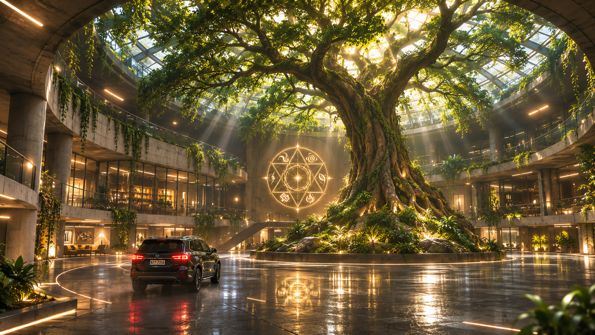